먼저 생각해 보세요.
Könnten Sie uns helfen? 이 말은 누구에게 하는 말일까요?
Sie는 어른이나 모르는 사람에게 쓰는 말이고, Könnten은 아주 공손한 부탁이에요.
A2.1 Dazugehören · Lektion 7
교통과 안내
음성은 준비 중이에요. 듣기 단추와 받아쓰기는 음성이 올라오면 쓸 수 있어요. 그동안은 글을 읽으면서 공부해요.
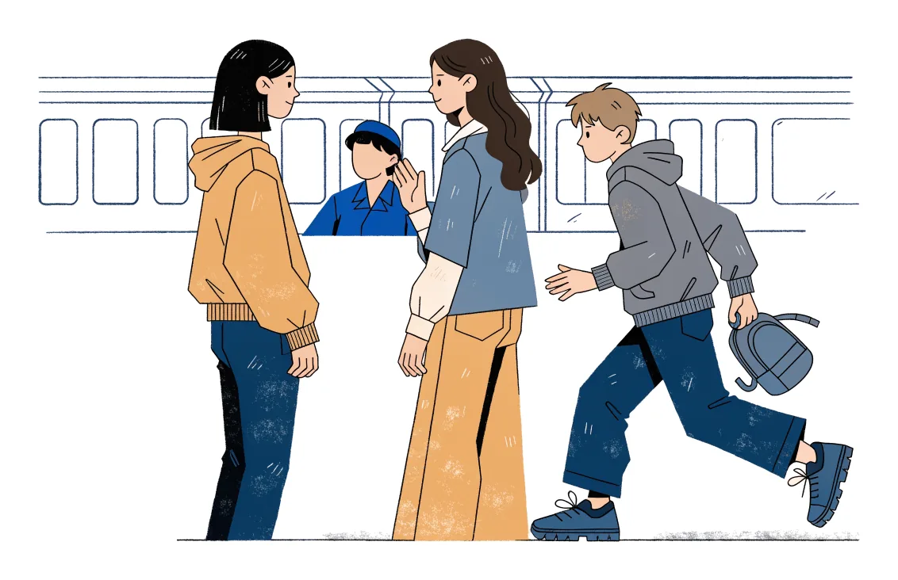
토요일 아침이에요. Emma의 배구팀이 본(Bonn)에서 경기를 해요. Yuna와 Elif, Lukas는 응원하러 기차를 타고 가요. 역에서 표를 사고, 본에서는 체육관까지 가는 길을 물어요.
눌러서 들어 보세요.
먼저 생각해 보세요.
Könnten Sie uns helfen? 이 말은 누구에게 하는 말일까요?
Sie는 어른이나 모르는 사람에게 쓰는 말이고, Könnten은 아주 공손한 부탁이에요.
Lektion 6의 낱말 다섯 개를 다시 떠올려 보세요.
문법 durch, über, an … vorbei, gegenüber, bis zu, seit, vor, nach, ab, Könnten Sie …?
이 과를 마치면 표를 사고, 필요한 정보를 묻고, 길을 자세히 알려 줄 수 있어요.
토요일 아침, 쾰른 중앙역이에요. Yuna와 Elif가 Lukas를 기다리고 있어요.
들으면서 찾아보세요. 기차는 몇 번 선에서 출발하나요?
본에 도착했어요. 체육관이 어디인지 몰라서 지나가는 사람에게 물어요.
들으면서 찾아보세요. 체육관은 무엇의 맞은편에 있나요?
두 대화를 듣고 답하세요.
Lukas는 왜 늦었나요?
Was kaufen die drei?
기차는 몇 번 선에서 출발하나요?
Die drei müssen umsteigen.
Der Zug fährt direkt. 곧바로 가는 기차예요.
Der Zug hat zehn Minuten Verspätung.
Wohin gehen die drei zuerst?
Wo ist die Sporthalle?
낱말 31개예요. 낱말이나 예문 앞의 단추를 누르면 소리가 나요. 명사는 der, die, das를 색으로 구분했어요.
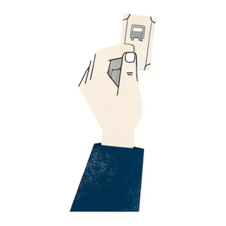
die Fahrkarte, die Fahrkarten 차표
Ich brauche eine Fahrkarte nach Bonn.본으로 가는 표가 한 장 필요해요.
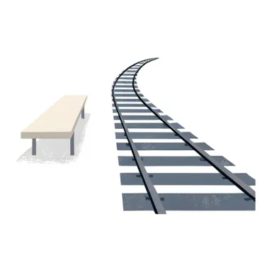
das Gleis, die Gleise 승강장, ~번 선
Der Zug fährt ab Gleis neun.기차는 9번 선에서 출발해요.
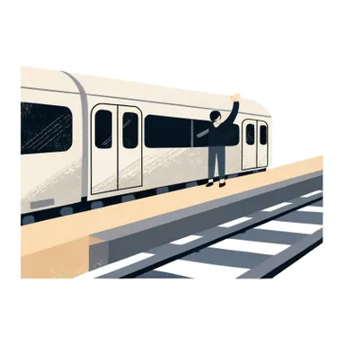
abfahren, ist abgefahren 출발하다
Der Zug fährt um zehn Uhr ab.기차는 10시에 출발해요.
ankommen, ist angekommen 도착하다
Wir kommen um elf Uhr an.우리는 11시에 도착해요.
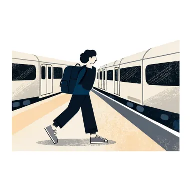
umsteigen, ist umgestiegen 갈아타다
Wir müssen in Köln umsteigen.우리는 쾰른에서 갈아타야 해요.
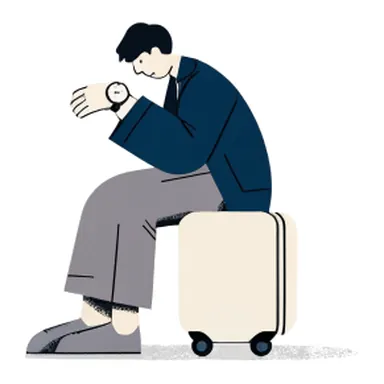
die Verspätung, die Verspätungen 연착, 지연
Der Zug hat zehn Minuten Verspätung.기차가 10분 늦어요.
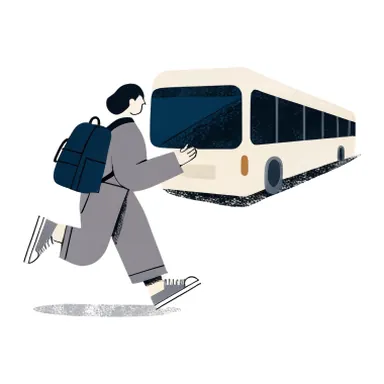
verpassen, hat verpasst 놓치다
Ich habe den Bus verpasst.나는 버스를 놓쳤어요.
die Fahrt, die Fahrten 가는 길, 운행
Die Fahrt dauert eine halbe Stunde.가는 데 30분 걸려요.
direkt 곧바로, 갈아타지 않고
Der Zug fährt direkt nach Bonn.기차는 본까지 곧바로 가요.
einfach 편도의, 쉬운
Eine Fahrkarte nach Bonn, einfach, bitte.본으로 가는 편도 한 장 주세요.
hin und zurück 왕복
Zwei Fahrkarten, hin und zurück.왕복으로 두 장이요.
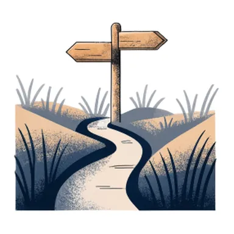
der Weg, die Wege 길
Wir suchen den Weg zur Sporthalle.우리는 체육관으로 가는 길을 찾고 있어요.
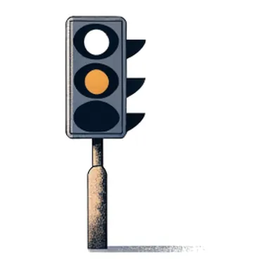
die Ampel, die Ampeln 신호등
Geh bis zur Ampel.신호등까지 가.
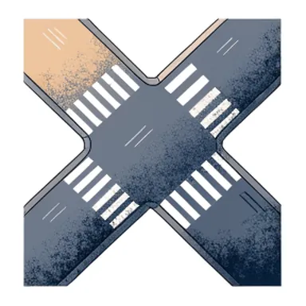
die Kreuzung, die Kreuzungen 사거리, 교차로
An der Kreuzung gehst du links.사거리에서 왼쪽으로 가.
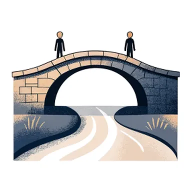
die Brücke, die Brücken 다리
Wir gehen über die Brücke.우리는 다리를 건너요.
die Ecke, die Ecken 모퉁이
Der Supermarkt ist an der Ecke.슈퍼마켓은 모퉁이에 있어요.
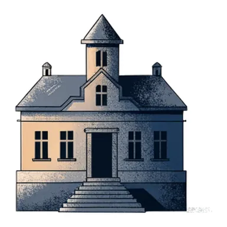
das Rathaus, die Rathäuser 시청
Das Rathaus ist alt.시청은 오래됐어요.
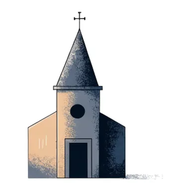
die Kirche, die Kirchen 교회, 성당
Die Kirche ist neben dem Rathaus.교회는 시청 옆에 있어요.
durch ~을 지나서, ~을 통과해서
Wir gehen durch den Park.우리는 공원을 지나가요.
über ~을 건너서, ~ 위로
Geh über die Straße.길을 건너.
an … vorbei ~ 옆을 지나서
Wir gehen am Kino vorbei.우리는 영화관 옆을 지나가요.
gegenüber 맞은편에
Die Schule ist gegenüber vom Park.학교는 공원 맞은편에 있어요.
bis zu ~까지
Geh bis zum Bahnhof.역까지 가.
seit ~부터 지금까지, ~째
Ich warte seit zehn Minuten.나는 10분째 기다리고 있어요.
vor ~ 전에
Vor einer Stunde war ich zu Hause.한 시간 전에 나는 집에 있었어요.
nach ~ 뒤에
Nach dem Spiel gehen wir essen.경기가 끝난 뒤에 우리는 밥 먹으러 가요.
ab ~부터
Ab Montag habe ich Ferien.월요일부터 방학이에요.
ungefähr 대략, ~쯤
Das dauert ungefähr eine Stunde.한 시간쯤 걸려요.
der Meter, die Meter 미터
Nach hundert Metern kommt eine Ampel.100미터 가면 신호등이 나와요.
wiederholen, hat wiederholt 되풀이하다, 다시 말하다
Könnten Sie das wiederholen?다시 말씀해 주시겠어요?
Könnten Sie …? ~해 주실 수 있을까요?
Könnten Sie mir helfen?저를 도와주실 수 있을까요?
이 과의 낱말로 여덟 문제를 풀어요.
예문을 보고 답해 보세요.
durch와 über 뒤에는 몇 격이 오나요?
규칙
길을 알려 줄 때 쓰는 전치사예요. durch(~을 지나서)와 über(~을 건너서)는 4격과 함께 써요. an … vorbei(~ 옆을 지나서), bis zu(~까지), gegenüber von(~ 맞은편에)은 3격과 함께 써요.
| 전치사 | 격 | 예 |
|---|---|---|
| durch | 4격 | durch den Park, durch die Stadt |
| über | 4격 | über die Brücke, über den Platz |
| an … vorbei | 3격 | am Rathaus vorbei, an der Kirche vorbei |
| bis zu | 3격 | bis zum Bahnhof, bis zur Ampel |
| gegenüber von | 3격 | gegenüber vom Kino, gegenüber von der Schule |
주의 zu dem은 zum, zu der는 zur, von dem은 vom, an dem은 am으로 줄여요. vorbei는 문장 맨 끝에 와요. Wir gehen am Rathaus vorbei.
예문을 보고 답해 보세요.
seit zwanzig Minuten은 어떤 뜻인가요?
규칙
seit는 전에 시작해서 지금도 이어지는 일에 써요. 그래서 동사는 현재형이에요. vor는 '~ 전에', nach는 '~ 뒤에', ab은 '~부터'예요. seit, vor, nach 뒤에는 3격이 와요.
| 전치사 | 뜻 | 예 |
|---|---|---|
| seit | ~부터 지금까지 | Ich lerne seit einem Jahr Deutsch. |
| vor | ~ 전에 | Vor einer Stunde war ich noch zu Hause. |
| nach | ~ 뒤에 | Nach der Schule gehe ich zum Training. |
| ab | ~부터 | Ab Montag habe ich Ferien. |
주의 '1년 전부터 배우고 있어요'를 과거로 옮기지 않아요. Ich lerne seit einem Jahr Deutsch. 지금도 배우고 있으니까 현재형이에요.
예문을 보고 답해 보세요.
Könnten Sie …?에서 다른 동사는 어디에 있나요?
규칙
모르는 어른에게 부탁할 때는 Können Sie …?보다 Könnten Sie …?가 더 공손해요. 친구에게는 Könntest du …?라고 해요. können을 쓸 때처럼 다른 동사는 원형으로 맨 끝에 와요.
| 명령 | 질문 | 더 공손한 질문 |
|---|---|---|
| Helfen Sie mir! | Können Sie mir helfen? | Könnten Sie mir helfen? |
| Hilf mir! | Kannst du mir helfen? | Könntest du mir helfen? |
주의 konnte는 '할 수 있었다'이고 könnte는 공손한 부탁이에요. Ich konnte nicht kommen. Könnten Sie kommen?
표를 사고 나니 역에 안내 방송이 나와요. 듣고 답하세요.
Durchsage am Bahnhof
Durchsage Achtung auf Gleis neun!
Durchsage Der Zug nach Bonn, Abfahrt neun Uhr dreiundfünfzig, hat heute zehn Minuten Verspätung.
Durchsage Der Zug fährt heute ab Gleis sieben.
Durchsage Bitte gehen Sie zu Gleis sieben.
Wohin fährt der Zug?
Wie viel Verspätung hat der Zug?
Der Zug fährt heute ab Gleis neun.
Der Zug fährt heute ab Gleis sieben. 승강장이 바뀌었어요.
듣고 알맞은 것을 고르세요.
무엇을 건너야 하나요?
Geh über die Brücke und dann links.
영화관은 어디에 있나요?
Das Kino ist gegenüber vom Rathaus.
Yuna는 지금 독일어를 배우고 있나요?
Ich lerne seit einem Jahr Deutsch.
버스는 어떻게 됐나요?
Der Bus ist vor zwei Minuten abgefahren.
쾰른에서 본으로 가는 기차 시간표예요. 보고 답하세요.
Köln Hbf → Bonn Hbf
| Abfahrt | Gleis | Information |
|---|---|---|
| 9:23 Uhr | 9 | direkt |
| 9:53 Uhr | 9 | direkt, 10 Minuten später |
| 10:10 Uhr | 4 | einmal umsteigen |
Welcher Zug hat Verspätung?
Mit dem Zug um 10:10 Uhr muss man umsteigen.
Ab welchem Gleis fährt der Zug um 10:10 Uhr?
Elif가 반 블로그에 쓴 글이에요. 읽고 답하세요.
Unser Samstag in Bonn
Am Samstag sind Yuna, Lukas und ich mit dem Zug nach Bonn gefahren. Emmas Mannschaft hatte dort ein Spiel.
Lukas hat den Bus verpasst, deshalb haben wir zwanzig Minuten am Bahnhof gewartet. Der Zug hatte auch Verspätung!
In Bonn haben wir einen Mann gefragt. Dann sind wir durch einen Park und über eine Brücke gelaufen. Wir waren pünktlich!
Das Spiel war spannend und Emma hat sehr gut gespielt.
Nach dem Spiel waren wir in der Stadt. Beethoven kommt aus Bonn, deshalb wollte Yuna das Beethoven-Haus sehen.
Um sechs Uhr sind wir zurück nach Köln gefahren. Seit Samstag übt Yuna jeden Tag Beethoven am Klavier.
Warum haben Yuna und Elif am Bahnhof gewartet?
Die drei sind zu spät zum Spiel gekommen.
Wir waren pünktlich!
Warum wollte Yuna das Beethoven-Haus sehen?
Yuna는 토요일부터 무엇을 하나요?
한국어 뜻을 보고 길을 알려 주는 알맞은 말을 고르세요.
Geh den Park.
공원을 지나서 가.
Wir gehen die Brücke.
우리는 다리를 건너요.
Geh an der Kirche .
교회 옆을 지나가.
Fahr bis Ampel.
신호등까지 가.
die Ampel이니까 zu der, 줄여서 zur예요.
Das Kino ist gegenüber Rathaus.
영화관은 시청 맞은편에 있어요.
Geh bis Bahnhof.
역까지 가.
4격인지 3격인지 보고 알맞은 관사를 고르세요.
Wir gehen durch Park.
durch 뒤에는 4격이에요.
Geh über Straße.
Geh über Platz.
Wir gehen an Schule vorbei.
an … vorbei는 3격이에요.
Das Kino ist gegenüber von Kirche.
한국어 뜻을 보고 seit, vor, nach, ab 가운데 알맞은 말을 고르세요.
Ich lerne einem Jahr Deutsch.
나는 1년째 독일어를 배우고 있어요.
Der Zug ist fünf Minuten abgefahren.
기차는 5분 전에 떠났어요.
der Schule gehe ich zum Training.
학교가 끝난 뒤에 나는 연습하러 가요.
Montag habe ich Ferien.
월요일부터 방학이에요.
Wir warten zwanzig Minuten.
우리는 20분째 기다리고 있어요.
dem Essen wasche ich die Hände.
밥 먹기 전에 나는 손을 씻어요.
공손한 부탁이에요. 알맞은 말을 고르세요.
Sie mir bitte helfen?
Sie에게는 Könnten이에요. 두 점을 잊지 마세요.
du mir dein Heft geben?
Könnten Sie das bitte ?
다른 동사는 원형으로 맨 끝에 와요.
Sie uns den Weg zeigen?
Könntest du bitte langsamer ?
낱말을 순서대로 눌러 문장을 만드세요.
우리는 공원을 지나가요.
학교 옆을 지나가.
나는 10분째 기다리고 있어.
다시 한번 말씀해 주시겠어요?
낱말과 뜻을 짝지으세요.
듣고 그대로 써 보세요.
음성 준비 중Ich habe den Bus verpasst. 버스를 놓쳤어.
음성 준비 중Wir warten seit zwanzig Minuten! 우리 20분째 기다리고 있어!
음성 준비 중Könnten Sie uns helfen? 좀 도와주실 수 있을까요?
Ich hätte gern eine Fahrkarte nach … ~로 가는 표 한 장 주세요.
Einfach oder hin und zurück? 편도인가요, 왕복인가요?
Hin und zurück, bitte. 왕복으로 주세요.
Wann fährt der nächste Zug nach …? ~로 가는 다음 기차는 언제 가요?
Ab welchem Gleis fährt der Zug? 기차는 몇 번 선에서 출발해요?
Muss ich umsteigen? 갈아타야 하나요?
Wie lange dauert die Fahrt? 얼마나 걸려요?
Gehen Sie durch den Park. 공원을 지나가세요.
Gehen Sie über die Brücke. 다리를 건너세요.
Gehen Sie am Rathaus vorbei. 시청 옆을 지나가세요.
Es ist gegenüber vom Kino. 영화관 맞은편에 있어요.
Könnten Sie mir helfen? 도와주실 수 있을까요?
Könnten Sie das bitte wiederholen? 다시 말씀해 주시겠어요?
Könntest du langsamer sprechen? 좀 더 천천히 말해 줄 수 있어?
대화 A에서 역할을 하나 고르세요. 상대의 말은 음성으로 나오고, 내 차례에는 직접 말해요.
집에서 학교나 학원까지 가는 길을 적으세요. 완성된 문장을 소리 내어 읽어 보세요.
Ich gehe durch den Park und am Supermarkt vorbei.
Meine Schule ist gegenüber vom Kino.
Der Weg dauert ungefähr zehn Minuten.
Mein Weg
친구가 우리 집에 처음 와요. 정류장에서 집까지 오는 길을 메시지로 써 보세요.
Hallo Mina, so kommst du zu mir: Fahr mit dem Bus bis zur Haltestelle Marktplatz. Geh dann über die Straße und durch den kleinen Park. Danach gehst du an der Kirche vorbei bis zur Ampel. Mein Haus ist gegenüber vom Supermarkt. Der Weg dauert ungefähr zehn Minuten. Bis gleich!
다 쓴 뒤에 확인해 보세요.
Ich kann eine Fahrkarte kaufen und nach Informationen fragen.표를 사고 필요한 정보를 물을 수 있어요.
Ich kann einen Weg genau beschreiben.길을 자세히 알려 줄 수 있어요.
Ich kann höflich um Hilfe bitten.공손하게 도움을 청할 수 있어요.